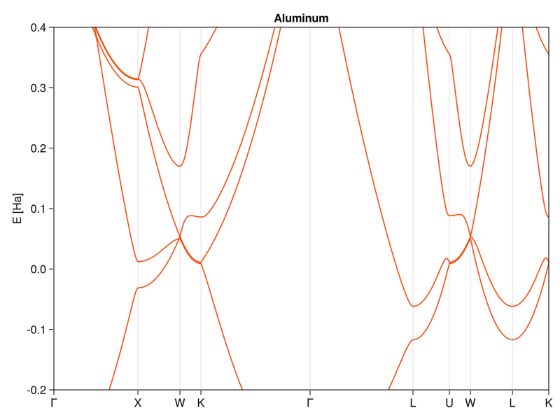
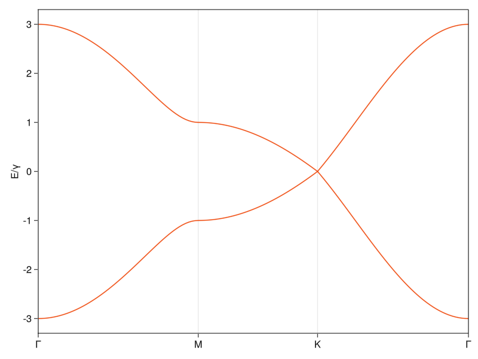

using Pkg
Pkg.activate("./env") Activating project at `~/projects/website/posts/cmpm3/env`Guess who’s back? Yeah, it’s been a while, but I’ve been quite busy with…well, things. No matter; the show is going on and today we finally dive into “real” stuff in computational quantum mechanics, more specifically, solid state physics. This part will also be showing some more big-boy practices in programming, as today’s code will serve as a base for future parts of this series. It might mean that some parts will look a bit too verbose and not flow as nicely with the prose. But trust me, it will pay back in the future, so just follow along, there’s also numerical physics in this part. I promise.
Real quick, let’s get the needed packages out of the way:
using Pkg
Pkg.activate("./env") Activating project at `~/projects/website/posts/cmpm3/env`I start using package environments for individual parts of the series so that I don’t pollute my global package list with cruft that I don’t need outside of this blog. This is so that package versions can be resolved with minimal conflict and I avoid dependency hell within my work.
using LinearAlgebra
using Unitful
import Unitful: Å, eV
using RangeHelpers: range, around
using Match
using Colors
using GLMakie
theme = Theme(
Lines = (color = :orangered2, cycle = [],)
)
set_theme!(theme)Just dense linear algebra will carry us almost all the way today, so there’s not much in here. Colors contains some types and definitions for GLMakie, which is a backend for the Makie plotting package that I got to like more than Plots.jl (there are a few lines at the bottom so that the default colors fit the theme of the blog, you can safely skip those). Unitful is a package to use and transform physical units and RangeHelpers gives a few quality-of-life improvements to linear ranges found in the standard library.
Before I go to the nitty-gritty of solids, I’ll make a short mathematical digression on group theory (something that’s very useful in physics and chemistry, so it’s worth talking about whenever possible).
The definition of a group is, as with many fundamental things in mathematics, a bit hazy to a layperson: A group is a set of…some things and operations on these things that transform the things from the group into other things of the same group. The operations should be associative and for a bunch of things to be considered a group, they need to include a neutral thing and all somethings need to have their corresponding inverse things in the group, too. Confusing? Good, that’s how you know it’s important.
And why is it important to us? Well, turns out that most solids are (at least in the ideal case) crystals, and most crystals form something called point symmetry groups. A point symmetry group is a collection of points in some kind of decently well-behaved space and some symmetry operations that “move” the points from their original positions into positions of other points without changing the overall structure.

Take, for example, a crystal that sits on a square lattice, like the two in the above picture. Pick a vector between two arbitrary points on the lattice (orange arrows), grab every single thing sitting on the lattice point (black dots), and move it by the same vector (black arrows). You see that if you do it to every thing on the (infinitely large) lattice, they will end up still sitting on the same lattice. This is known as (discrete) translational symmetry and the displacement vectors that preserve the shape of the crystal are known as lattice translation vectors. You can similarly rotate the whole crystal around any of the lattice points by, e.g., 90º and end up with the same thing (n-fold rotational symmetry, where n is the number of rotations you can do before you go full circle) or you can reflect across a line connecting any of the nearest neighbors (reflection symmetry). You can stack these operations in any way you want, and the resulting crystal will still look the same.
From this, the old-timey definition of a crystal was that it is a periodic structure, i.e. a collection of atoms whose positions could transform into each other by translating along a lattice vector, like the orange one above. The definition had to change a couple of decades ago with Shechtman’s (in)famous discovery of naturally occurring stable quasicrystals, where now a crystal is any structure with a discrete Fourier transform (reason for that will become obvious as we delve deeper into solid state and condensed matter physics).
If we stick to just periodic structures, it turns out that there is only a finite amount of groups that work with this definition. To be more exact, there are only 5 of them in 2D and 14 in 3D space, and we call them Bravais lattices. The more perceptive of you should notice that such a small number of space groups cannot account for the whole zoo of crystal structures found in nature. That is because the thing that’s periodic with the lattice does not need to be just a single atom. In most crystals, you actually have clumps of atoms and these clumps repeat periodically. The volume that contains this repeating pattern or clump is called the unit cell. By demanding that these unit cells need always fill the space without any gap, you end up with 7 crystal systems and the whole shebang leads to a grand total of 230 possible crystal symmetries, which form the crystallographic space groups.1
There is quite a bit more to be said about how symmetries dictate physics and how you can get a rather good qualitative understanding of a material and its chemistry just from the space symmetry of the lattice or molecule. As a matter of fact, there are whole books dedicated to this topic, which is why I won’t go that deep into it right now. It’s much better from the engagement standpoint to just sprinkle bits and pieces in as they become relevant.
That, and the author of this blog is really bad at crystallography, so he needs to change the topic. Fast.
So the first thing on our way toward calculations on crystals is implementing the lattice. But before that: units! We’ll use a form of atomic unit system called the Hartree unit system, which sets basically every unitful property of the hydrogen atom equal to one: \(m_e = e = \hbar = a_0 = 1\) (\(a_0\) is the Bohr radius). The characteristic scale of energy in this system is called Hartree (Ha) and corresponds to the total electrostatic energy of a Hydrogen atom which, by the virial theorem, is twice the ionization energy or ~27 eV. Bohr radii are not exactly convenient to work with in diffraction experiments and most people use nanometers or angstroms and electronvolts, so let’s handle that:
a₀ = 0.529177249Å
Ha = 27.2eV;Unitful already has angstroms and electronvolts defined, so there’s nothing more needed.
Now we can define a Bravais lattice type, which is uniquely determined in \(d\)-dimensional space by a set of \(d\) independent primitive lattice translation vectors \(\{ R_i \}_{i = 1} ^d\). The whole lattice is a linear combination of those, i.e. \(\vec{R}_{ n= \{ n_i \}} = \sum_{i=1}^d n_i \vec{R}_i\) (\(n_i\) is the index of individual lattice sites).
In anticipation of what’s to come, I’ll also package it with a corresponding reciprocal lattice, which is a dual lattice to the real-space lattice (think the correspondence of momentum space and real space). Many textbooks introduce this lattice in the context of diffraction experiments. There it turns out that X-rays or neutrons coherently scatter off the normal lattice only if their momentum/wave vector belongs to its reciprocal lattice, but I don’t like this approach. Because: a) it forces a full chapter of information on the realization of specific experimental techniques that has to be wedged into a much more physics-driven discussion, and b) because it’s first discussed in terms of experiments and little other context, it gives people the idea that the reciprocal lattice is a matter of experimental convenience, rather than a fundamental structure describing the physics.
So rather than going the conventional pedagogical route, I’ll incept the importance of the reciprocal lattice with definition using just the translational invariance. The rest will naturally fall into place as the discussion goes on.
Imagine a function of real-space coordinates that has the same symmetry as lattice, i.e. \(f(\vec{r} + \vec{R}_n) = f(\vec{r})\) for any \(\vec{R}_n\). Basic Fourier analysis tells us that such a periodic function can be expanded using a discrete set of wave vectors \(\{ G_m \}\):
\[ f(\vec{r}) = \sum_m f_m e^{i \vec{G}_m \cdot \vec{r}} = \sum_m f_m e^{i \vec{G}_m \cdot (\vec{r} + \vec{R}_n)} = \sum_m f_m e^{i \vec{G}_m \cdot \vec{R}_n} e^{i \vec{G}_m \cdot \vec{r}}. \]
This has to hold for arbitrary lattice vector \(\vec{R}_n\), so \(e^{i \vec{G}_m \cdot \vec{R}_n} = 1\). From this, the set of vectors \(\{ \vec{G}_m \}\) is fully determined as:
\[ \vec{G}_m \cdot \vec{R}_n = 2\pi N; \; N \in \mathbb{Z}. \]
Because the positions \(\vec{R}_n\) form a lattice, the set of positions in momentum space \(\vec{G}_m\) also forms a periodic structure. It’s not the same lattice but certain properties, e.g. rotational symmetries, are shared. And, as with its real-space dual, this lattice can be again uniquely determined by the primitive reciprocal vectors \(\{ \vec{G}_j \}_{j = 1}^d\) defined by the above equation with \(\vec{R}_n\) being the primitive lattice vectors and \(N = 1\).
struct Lattice{T<:Real, N}
R::Union{T, Array{T}}
G::Union{T, Array{T}}
V::T
function Lattice(R::Union{<:Real,Matrix{<:Real}})
G = 2π * inv(R)
R,G = promote(R,G)
V = det(R)
dim = isempty(size(R)) ? 1 : first(size(R))
new{eltype(R), dim}(R, G, V)
end
endfunction Lattice(R::Union{<:Quantity, Matrix{<:Quantity}})
Unitful.NoUnits.(R ./ a₀) |> Lattice
end
function Lattice(a::T, b::T, γ::Real) where T <: Union{Real, Quantity}
γ = deg2rad(γ)
R = [a*sin(γ) zero(T);
a*cos(γ) b]
Lattice(R)
end
function Lattice(a::T, b::T, c::T, α::Real, β::Real, γ::Real) where T <: Union{Real, Quantity}
α, β, γ = deg2rad.((α, β, γ))
γ = (cos(α) * cos(β) - cos(γ)) / (sin(α) * sin(β))
γ = clamp(γ, -1, 1) |> acos # floating point arithmetic could theoretically push the value above ±1
R = [a*sin(β) -b*sin(α)*cos(γ) zero(T);
zero(T) b*sin(α)*sin(γ) zero(T);
a*cos(β) b*cos(α) c]
Lattice(R)
end;Structs and constructors
A lot going on here. Because the notion of the lattice will come up time and time again, I created a composite type Lattice, which is a structure that holds the fields R, G and V. I also made it parametric over a restricted set of types, where R and G can be either of type T or an array of Ts (that’s what the Union is for) and T has to be a subtype of real numbers (e.g. floats or integers). The option to have scalar T is because there’s no reason to pack a single number into an array if the lattice happens to be 1-dimensional. As to why I keep T so generic, there might be situations where we purposefully do not want it to be a 64-bit float. One such case is if I ever decide to also use this soon-to-be library for calculations on GPUs which often natively support only 32-bit floats (or we might want to use a symbolic type, BigFloat, etc.)
The next thing is constructors, which come in two flavors. If you define a type foo with fields bar and baz, it will get a default constructor method foo(bar, baz). But you might not want to do that, as in our case: The fields G and V are all determined by R and we want to enforce that relationship. That’s why I defined a function Lattice(R) inside the type definition, which overrides the default constructor. It has to return using the new method and now causes the original default constructor Lattice(R, G, V) to not exist - this is called an inner constructor. Then I use multiple dispatch to define more variations of constructors that all call the base one. First is a constructor that looks almost like the base, but it takes a type of Quantity, which is a unitful quantity (e.g. 1 nm). It converts the quantity into a number (by scaling it to the Bohr radius) and feeds that to the base constructor. The other two constructors are convenience constructors, which build the matrix R out of lattice parameters (and rotate the whole thing such that the last lattice vector is always parallel to the last cartesian axis). These are called outer constructors, for obvious reasons. They do not override or invalidate the default constructor unless you shadow it (define an outer constructor with the same type signature).
So why do I store the primitive vectors in matrices? First, it’s convenient. Second, it allows for a better representation of positions: In many cases, the primitive vectors do not form an orthogonal basis and mix cartesian coordinates (you’ll see concrete examples in a second). And many calculations or measurements are much easier to express in fractions of the lattice constants. So we’ll introduce reduced coordinates \(x_j\), that form an orthogonal system where the position vectors are fractions (or multiples) of the primitive vectors. The transformation of these reduced coordinates back to physical coordinates \(r_i\) is the matrix \(R_{ij}\), i.e \(r_i = R_{ij} x_j\) or \(\vec{r} = \mathbf{R} \vec{x}\). The same deal for reciprocal space vectors, although, one should keep in mind that the reciprocal vectors are covectors to real-space vectors. Strictly speaking, they should either be row vectors (we follow the normal-people convention of regular vectors being column vectors) and the matrix \(\mathbf{G}\) multiplies them from the right, or the matrix has to be transposed. It is constructed by using the definition of reciprocal lattice, where \(\mathbf{R} \cdot \mathbf{G} = 2\pi \cdot \mathbf{1}\), which leads to \(\mathbf{G} = 2\pi \mathbf{R}^{-1}\). Then there’s also unit cell volume V.2
One last thing to mention here is that I also included the parameter N. It will be used to express the dimensionality of the lattice for multiple dispatch purposes, so I overload the ndims method for our Lattice type:
Base.ndims(l::Lattice{T,N}) where {T,N} = NOur next step in the computational representation of the crystal is the unit cell, which is just a collection of site positions. That’s pretty straightforward:
struct UnitCell{T, N}
positions::Vector{T}
species::Vector{Symbol}
function UnitCell(species::Vector{Symbol}, rs::T...) where T
positions = collect(rs)
if length(species) == length(rs)
new{T, length(first(rs))}(positions, species)
else
throw(DimensionMismatch("Number of species and positions does not match"))
end
end
end
function UnitCell(species::Symbol, rs...)
species = fill(species, length(rs))
UnitCell(species, rs...)
end
function UnitCell(rs...)
UnitCell(:none, rs...)
end;I follow the convention used in other similar software, where I also store the labels of the sites. For cases of the sites are identical or unlabeled, I provide convenience constructor methods. Note that the site positions are in reduced coordinates (an almost universally used convention). I again overload the dimensionality and length methods:
Base.ndims(c::UnitCell{T,N}) where {T,N} = NBase.length(c::UnitCell) = c.positions |> lengthWith the Bravais lattice and unit cell being taken care of, we can finish our act of pure creation by defining the final Crystal type, which is just the repeating unit cell. To do that, we only need to package it together (the periodic repeating will be handled by the actual computational routines as necessary):
struct Crystal{N}
lattice::Lattice
cell::UnitCell
function Crystal(l::Lattice{T,N}, c::UnitCell) where {T,N}
new{N}(l, c)
end
endInner constructor here is to handle the type inference of the parametric type.
To check if we did everything correctly, it would be nice to visualize the crystals. I guess the proper way would be to create a method that will export the information into some common file format and use proper crystallography tools (I use VESTA), but that would require me to read through their specs. I’m not about to sink to such lows as following the fast and robust approach, so I’ll make my own visualization routine using Makie (blackjack and hookers not included):
function plotcrystal!(ax, c::Crystal, vertpos; ncells, showcell, showbonds, cmap)
R = c.lattice.R
if showbonds
for offset ∈ Iterators.product(fill(0:(ncells-1), ndims(c.lattice))...)
supercellpositions = eltype(c.cell.positions)[]
for pos ∈ c.cell.positions
for tn ∈ Iterators.product(fill((-1,0,1), ndims(c.lattice))...)
push!(supercellpositions, R * (pos .+ tn))
end
end
for pos ∈ c.cell.positions
pos = R * pos
rs = sort(map(v -> v .- pos, supercellpositions), by=norm)
filter!(v -> norm(v) > 0, rs)
nns = filter(v -> norm(v) ≈ norm(first(rs)), rs)
for nn ∈ nns
pos1 = pos .+ R * collect(offset)
pos2 = pos .+ nn .+ R * collect(offset)
lines!(ax, [tuple(pos1...), tuple(pos2...)], color=:black, linewidth=2)
end
end
end
end
for offset ∈ Iterators.product(fill(0:(ncells-1), ndims(c.lattice))...)
sps = unique(c.cell.species)
nsps = length(sps)
cmap = Makie.categorical_colors(cmap, nsps > 1 ? nsps : 2)
if showcell
cellvertices = map(v -> tuple((R * (v .+ offset))...), eachcol(vertpos))
lines!(ax, cellvertices, color=:grey, linewidth=0.5)
end
for (i,sp) ∈ enumerate(sps)
idxs = findall(x -> x == sp, c.cell.species)
pos = [tuple((R * (c.cell.positions[i] .+ offset))...) for i ∈ idxs]
meshscatter!(ax, pos, markersize=0.5, color=cmap[i], shading=true, label=string(sp))
end
end
nothing
end
plotcrystal!(ax, c::Crystal{2}; ncells=1, showcell=true, showbonds=true, cmap=:PuOr_5) =
plotcrystal!(ax, c, [0 0 1 1 0; 0 1 1 0 0]; ncells, showcell, showbonds, cmap=cmap)
plotcrystal!(ax, c::Crystal{3}; ncells=1, showcell=true, showbonds=true, cmap=:PuOr_5) = plotcrystal!(ax, c,
[0 1 1 0 0 0 0 0 0 1 1 1 1 1 1 1 0 0 1;
0 0 1 1 0 0 1 1 0 0 0 1 1 0 0 1 1 0 0;
0 0 0 0 0 1 1 0 0 0 1 1 0 0 1 1 1 1 1]; ncells, showcell, showbonds, cmap=cmap);Oh boy…Ok, so what does it do? Plot crystals, obviously. It has the option to show a supercell consisting of multiple unit cells (the ncells argument), show the unit cell outline (showcell), and show bonds between nearest neighbors (showbonds). Let’s ignore the supercell for a moment, and see what it does in a single unit cell. The sites are easiest, where it just iterates over their positions and plots them as a scatter-plot (the color is determined by the site label automatically). The cell outline is very easy thanks to our use of reduced coordinates because, in those, it’s always a unit square/cube. The vertpos argument expects a matrix where the columns are the unit cell vertices (in reduced coordinates) and it plots a path between them (I use multiple dispatch here so that users don’t have to think about it). The bonds of nearest neighbors are found by replicating all atomic positions also in cells around the current unit cell, sorting them by length, and getting rid of all that have a length of 0 or larger than the smallest length. Extention to drawing a supercell is trivial because, in reduced coordinates, cells are integer multiples of length apart. For good measure, I also added the cmap argument that accepts any of the Makie-compatible color schemes for all the people who might be colorblind, disagree with my taste, or both.
Let’s try it out. If you want to find lattice constants and unit cells of various materials, I recommend using the Materials Project. It’s a database of calculated material structures (and a bunch of their electronic and mechanical properties) that gives the lattice parameters in the format our code expects. We can try graphene and hexagonal Boron Nitride (hBN), both with the same hexagonal structure. Hexagonal crystals have a triangular lattice with two atoms per unit cell, with the difference between graphene and hBN being that the latter has different atoms at the inequivalent positions:
graphene = Crystal(
Lattice(2.468Å, 2.468Å, 120),
UnitCell(:C, [2/3, 1/3], [1/3, 2/3])
)
hBN = Crystal(
Lattice(2.512Å, 2.512Å, 120),
UnitCell([:B, :N], [2/3, 1/3], [1/3, 2/3])
);It might be worth mentioning that the choice of primitive lattice vectors and site positions is not unique, and you might see different ways of creating the structure. (another option is having one atom at the origin and using 60º as the lattice angle).
With that done, we can access the primitive vector matrix that, in this case, does not form an orthogonal basis, as advertised earlier:
graphene.lattice.R2×2 Matrix{Float64}:
4.03901 0.0
-2.33192 4.66384graphene.lattice.R[:,1] ⋅ graphene.lattice.R[:,2] != 0trueAfter doing all the work, the visualization is easy:
fig2ds = Figure()
axgs = Axis(fig2ds; title = "graphene", xlabel="x/a₀", ylabel="y/a₀", xgridvisible=false, ygridvisible=false, aspect = DataAspect())
axhbns = Axis(fig2ds; title = "hBN", xlabel="x/a₀", ylabel="y/a₀", xgridvisible=false, ygridvisible=false, aspect = DataAspect())
plotcrystal!(axgs, graphene, ncells=3)
plotcrystal!(axhbns, hBN, ncells=3)
fig2ds[1,1] = axgs
fig2ds[1,2] = axhbns
current_figure()The way of plotting with Makie is almost identical to Python’s Matplotlib library if you’re using the object-oriented API (which you should be doing). I create a figure, with two axes, fill those two axes with the plotcrystal! routine, and position them into the figure. It’s that simple.
Sneaky TODO: At the time of writing this, I couldn’t figure out how to make legends work with 3D meshscatter plots. Hopefully, I’ll find a way to fix that.
As a quick tidbit, you can also nicely identify the two different crystal edges commonly mentioned in literature on nanotubes and other finite-sized systems. When you roll up graphene into a nanotube, you can do it along the unit cell edges, called zigzag edge, for obvious reasons. Or you can do it along a line perpendicular to those, called the armchair edge. If you stare at it for long enough, you can kinda-sorta see the armchair, but the names had to come from the same type of people who named stellar constellations (seriously, who looked at this and thought “Totally a bear.”).
The routine works just as well for 3D crystals. Let’s take the diamond, which has two carbon atoms in a FCC lattice (sometimes called the diamond cubic lattice). The primitive unit cell of a FCC lattice is a rhombohedron, and the atoms are at positions (0,0,0) and (1/4,1/4,1/4), as I’m being told by the Materials Project’s entry on diamond:
diamond = Crystal(
Lattice(2.527Å, 2.527Å, 2.527Å, 60, 60, 60),
UnitCell(:C, [0.0, 0.0, 0.0], [1/4, 1/4, 1/4])
);fig3d = Figure()
axds = Axis3(fig3d, xlabel="x/a₀", ylabel="y/a₀", zlabel="z/a₀", xgridvisible=false, ygridvisible=false, zgridvisible=false, aspect = :data)
axds_single = Axis3(fig3d, xlabel="x/a₀", ylabel="y/a₀", zlabel="z/a₀", xgridvisible=false, ygridvisible=false, zgridvisible=false, aspect = :data)
plotcrystal!(axds, diamond; ncells=2, showcell=false, showbonds=true)
plotcrystal!(axds_single, diamond; ncells=1, showcell=true, showbonds=true)
fig3d[1,1] = axds
fig3d[1,2] = axds_single
current_figure()I plot a supercell that shows the diamond structure and a single unit cell with outlines, so you can see how the atoms and cells are stacked to create the diamond lattice. You can also rigidly offset the coordinates in the unit cell so that the two positions are (1/4,1/4,1/4) and (3/4,3/4,3/4), and the atoms sit neatly in the middle of the cell (it doesn’t affect physics).
Having the structure of the crystals is nice and all, but that’s not the reason why we’re here. We want to be able to compute the properties of these crystals and, eventually, also optimize their shape. For that, we need to solve the Schroedinger equation with a Hamiltonian corresponding to the crystal. The Hamiltonian in general will consist of two parts: The Hamiltonian describing the electrons in the crystal and the Hamiltonian describing the atomic cores (and there’s also a part that describes how these two interact). Turns out that most properties of the crystal are due to the electrons. Also, experimentally, we’re most often also probing the electronic system, where interaction with e.g., light is mostly through scattering or absorption of photons by electrons (not to mention direct measurements of the electronic system, like with resistance measurements). For this reason, we’ll restrict our problem to just the dynamics of the electrons, with the atoms being there just as sources of time-independent electrostatic potential. This is called the Born-Oppenheimer approximation, and the physical motivation for this comes from the huge difference between electron and core masses (by a ratio of roughly 1/2000), which means that the electron dynamics are many orders of magnitude faster and the typical energies for electronic degrees of freedom are proportionally larger than the lattice degrees of freedom. The second approximation that we’ll make is that we assume non-interacting electrons. One would think that this is a rather strong assumption that does not correspond to reality but it turns out to work very well for microelectronics industry even these days. As we progress to more sophisticated methods, both of these approximations will be removed but, for now, our world is fully determined by solutions to this Schroedinger equation (in Rydberg units):
\[ \frac{1}{2}\nabla^2 \Psi(\vec{r}) + V(\vec{r}) \Psi(\vec{r}) = E \Psi(\vec{r}); \qquad V(\vec{r} + \vec{R}_n) = V(\vec{r}). \]
Because an ideal crystal is infinitely periodic, doing calculations in a box like we did in the previous part will not lead to a faithful representation of wavefunctions. A much better option is to represent states in their full wave-like glory.
For a moment, let’s pretend that the lattice is empty, i.e. \(V(\vec{r}) = 0\). In that case, we’re just solving the Hamiltonian of a free electron, with wave functions being just plane waves:
\[ \left| \theta_{\vec{k}} \right> = \theta_{\vec{k}} (\vec{r}) = \frac{1}{\sqrt{2\pi}} e^{i \vec{k} \cdot \vec{r}}. \]
When we do have a potential, it has to have the same periodicity as the lattice (by definition), so it can be expanded into only plane waves with reciprocal lattice wave vectors \(\vec{k} \in \left\{ \vec{G}_n \right\}\), as already explained a couple of paragraphs above:
\[ V(\vec{r}) = \sum_{\{\vec{G}_n\}}V(\vec{G}_n) e^{i \vec{G}_n \cdot \vec{r}}, \] where \(V(\vec{G}_n)\) are the Fourier components of the potential (you should slowly start seeing the importance of the reciprocal lattice).
Because of the of the sum in the potential, the action of the Hamiltonian on arbitrary plane wave state \(\left| \psi \right> = H \left| \theta_{\vec{k}} \right>\) will generate a state that belongs to a relatively narrow subset of plane waves, namelly \(\left| \psi \right> \in S_{\vec{k}} = \left\{ \left| \theta_{\vec{k} + \vec{G}_n} \right> \right\}_n\). A set \(S_{\vec{k}}\) is closed under application of \(H\) (the action of \(H\) on any element will generate another element of the same set), so there also has to exist a basis \(\left\{ \left| \phi_{\vec{k}} \right> = \phi_{\vec{k}} (\vec{r})\right\}\) in which the crystal Hamiltonian can be diagonalized (biggly important, I’ll talk about that in a second).
And this is where something magical happens: Two sets \(S_{\vec{k}}\) and \(S_{\vec{k}^{\prime}}\) are distinct if and only if \(\vec{k} - \vec{k}^{\prime} \not\in \left\{ \vec{G}_n \right\}\), which means that all physically distinct states exist only in a restricted sector of the reciprocal space, with \(\vec{k}\) in the volume spanned by the primitive reciprocal vectors. This volume coincides with the primitive cell of the reciprocal lattice centered around \(\vec{k} = \vec{0}\). It’s called the Brillouin zone and every state of the crystal can be represented by eigenstates fully contained in it. Thanks to the breaking of the continuous translational symmetry of empty space, we can compress our momentum space down to a finite volume.
If you think about it for a bit, it follows what’s already happening in the real space. Because I can shift the origin point of real-space coordinates by arbitrary lattice vector and not change any property of the crystal, the only physically distinct positions also lie just in the primitive unit cell.
This should be all the groundwork needed to do actual physics, which starts with the computational basis. As I hinted in the previous section, there exists a space of characteristic functions in which the crystal Hamiltonian can be easily diagonalized. To find that basis, let’s write out the operators of the Hamiltonian explicitly as they act on a generic superposition of plane waves in the Brillouin zone:
\[ \sum_{\vec{k}} \left[ \varepsilon_{\vec{k}}^0 \, c_{\vec{k}} e^{i \vec{k} \cdot \vec{r}} + \sum_{\{ \vec{G_n} \}} V(\vec{G}_n) c_{\vec{k}} e^{i (\vec{k} + \vec{G}_n) \cdot \vec{r}} \right] = \varepsilon \sum_{\vec{k}} c_{\vec{k}} e^{i \vec{k} \cdot \vec{r}} \]
Where \(\varepsilon_{\vec{k}}^0 = \frac{1}{2}\left| \vec{k} \right|^2\) is the free electron energy. By comparing the coefficients of Fourier components (to find the \(k\)-th component in the inner sum, you have to shift the dummy index \(\vec{k} \rightarrow \vec{k} - \vec{G}_n\)), we arrive at an infinite algebraic system for the coefficients \(c_{\vec{k}}\):
\[ \left( \varepsilon_{\vec{k}}^0 - \varepsilon \right) c_{\vec{k}} + \sum_{\{ \vec{G}_n \}} V(\vec{G}_n) c_{\vec{k} - \vec{G}_n} = 0, \]
which, if solved, will lead to eigenfunctions of the following form:
\[ \phi_{\vec{k}} (\vec{r}) = \sum_{\vec{G}_n} c_{\vec{k} - \vec{G}_n} e^{i (\vec{k} - \vec{G}_n) \cdot \vec{r}} = e^{i \vec{k} \cdot \vec{r}} \sum_{\vec{G}_n} c_{\vec{k} - \vec{G}_n} e^{-i \vec{G}_n \cdot \vec{k}} = e^{\vec{k} \cdot \vec{r}} u_{\vec{k}}(\vec{r}), \]
where I absorbed the whole sum over reciprocal lattice vectors into a lattice-periodic function \(u_{\vec{k}} (\vec{r})\) (and I also quietly hid the normalization into it). This is known as Bloch’s theorem, and it’s the central building block of everything else in solid state and condensed matter physics. It’s so crucial because it proves that single-electron eigenstates of any crystal Hamiltonian are plane wave-like functions (there’s some modulation by the function \(u_{\vec{k}} (\vec{r})\)) with quasi-momentum \(k\). Combined with the knowledge we gained in the previous section, this allows for a complete description of the full single-electronic spectrum within the Brillouin zone.
Technically, you can solve an arbitrary single-electron problem by solving the system of equations for \(c_{\vec{k}}\), but that turns out to be a not-so-easy task. As a matter of fact, it’s so not easy that people don’t usually even attempt a general solution…
Before we get to actual computation, it’s prudent to quickly think about how we typically graph quantities as functions of momentum \(\vec{k}\) (or position, for that matter). It’s easy in one dimension, and you could also imagine plotting things as surfaces in two-dimensional systems. But plotting something as a dense function of 3D space becomes an issue. Your only option is to use lower-dimensional slices of the full space, and in a quantitative field like this one, you better make sure that those slices are as information-packed as possible.
Fortunately, because there are only a few Bravais lattices, there are equally few reciprocal lattices, and this structure can be exploited. Due to the high symmetry of the crystals and their duals, you can get a good feeling for the overall structure by working only along certain paths in the momentum space. These paths are usually called branches and they are straight lines that connect places in the Brillouin zone called high symmetry (or critical) points, called so because they are important for the symmetry operations of the crystal’s space group. The only thing I remember is that \(\Gamma\) is the point \(\vec{k} = \vec{0}\). The rest I have to look up, so don’t feel bad for not remembering which labels belong to what positions.
Many of you probably encountered plots like this, even if you are not familiar with what you just read. It’s effectively the only way you’ll see people report band structure calculations or measurements. Because calculating these is the most central part of computational solid state physics and chemistry, we should prepare a simple routine that will prepare the k-space trajectories for us:
function kpath(kpoints, dk)
vertices = reverse([point.second for point ∈ kpoints])
labels = [point.first for point ∈ kpoints]
path = [last(vertices)]
plength = zeros(typeof(dk),1)
idxs = [1]
while length(vertices) >= 2
pop!(path)
v1 = pop!(vertices)
v2 = last(vertices)
dir = v2 .- v1
dirm = norm(dir)
segment = [v1 .+ dir .* dd
for dd ∈ range(start = 0, stop = 1, step = around(dk/dirm))]
path = append!(path,segment)
idxs = push!(idxs, last(idxs) + length(segment) - 1)
end
plength = append!(plength,
Iterators.accumulate(
+,[norm(v2 .- v1) for (v1,v2) ∈ zip(path[1:end-1], path[2:end])]
))
points = [lab => plength[i] for (lab,i) ∈ zip(labels, idxs)]
(path=path, plength=plength, ppoints=points)
end;Nothing particularly exciting or complicated. The function just takes a vector of pairs point_name => [coordinate] in order of how they are supposed to be traversed (I wanted to go with a dictionary, but I need some of the points to repeat), and the k-spacing along the path. It returns a named 3-tuple, where path is a vector of reduced k-coordinates along the path, plength is the distance along the path, and ppoints a vector of pairs point_name => distance_at_point. We don’t really need anything except path, but the other two are very useful for plotting.
Now back to physics.
While Bloch’s theorem is constructive in terms of defining what the physical states are, it has proven to be cumbersome in practical reality. Finding the expansion coefficients with some realistic Hamiltonian requires solving humongous algebraic systems and often makes it hard to incorporate (or gain) some physical intuition or phenomenology. Because of that, we developed a bunch of models and methods which are limiting cases.
The by far simplest method to give you a very, very rough idea of a band structure, is the use of what’s known as the empty lattice approximation. As the name suggests, you take an empty space and, in your mind’s eye, imagine that it’s periodic, eliminating any complications that might or might not arise from your feeble attempts at using Bloch’s theorem. All this does is, rather depressingly, take the free electron and imprison it in the Brillouin zone. Or, in less prosaic terms, you take the free-space parabolic dispersion, replicate it offset by the reciprocal vectors \(\{ \vec{G}_n \}\) and cut out only the Brillouin zone. The Hamiltonian in that case is very easy:
\[ H(\vec{k}) = \sum_{\left\{ \vec{G}_n \right\}}\frac{1}{2} \left( \vec{k} + \vec{G}_n\right)^2, \]
Which is just a diagonal matrix. To put this in code, we only have to decide how many bands we want to recover (i.e., how many \(\vec{G}_n\) we use), which will determine the size of the matrix.
function elH(k, n, crystal::Crystal)
G = crystal.lattice.G
map(sort(Iterators.product(fill(-n:n,length(k))...) |> collect |> vec, by=norm)) do Gn
q = G' * collect(k .- Gn)
1/2*norm(q)^2
end
end;It’s not really* a Hamiltonian because I’m not returning a matrix. This is because it’s already diagonal, so I just return the vector of eigenvalues by using linear combinations of all \(\vec{G}\)s up to n-times the primitive reciprocal vectors.*
To demonstrate, it’s best to start with a 1D case:
crystal1D = Crystal(
Lattice(1.0),
UnitCell(0.0)
)
kpath1D = -1.5:0.01:1.5
elH1D(k) = elH(k, 1, crystal1D)
es1D = elH1D.(kpath1D);fig_1D = Figure()
ax_1D1 = Axis(fig_1D, title="Extended zone scheme")
ax_1D2 = Axis(fig_1D, title="First Brillouin zone")
for n ∈ 1:length(es1D[1])
lines!(ax_1D1, kpath1D, [e[n] for e ∈ es1D])
lines!(ax_1D2, kpath1D, [e[n] for e ∈ es1D])
end
hideydecorations!(ax_1D1)
hideydecorations!(ax_1D2)
ax_1D1.xticks = ([-1/2,1/2], ["-π/a","π/a"])
ax_1D2.xticks = ([-1/2,1/2], ["-π/a","π/a"])
ylims!(ax_1D1, (0,30))
ylims!(ax_1D2, (0,30))
xlims!(ax_1D2, (-1/2,1/2))
fig_1D[1,2] = ax_1D1
fig_1D[1,1] = ax_1D2
current_figure()In one dimension, life is simple. The reciprocal space is just a line, so we don’t have to deal with k-branches and n=1 (\(\left\{ \vec{G}_n \right\} = \left\{ -1,0,1 \right\}\)) is sufficient to recover three “bands”. On the left you see the conventional way to graph band diagrams (Brillouin zone for a 1D crystal is the line segment \(\left[-\frac{\pi}{a},\frac{\pi}{a} \right]\), or \(\left[-\frac{1}{2},\frac{1}{2} \right]\) in reduced coordinates). On the right, I plotted the band diagram in what’s known as the extended zone, where I included neighboring reciprocal cells. This way, you can see how the shifted parabolas lead to the bands in the first zone.
You won’t find too many one-dimensional crystals in the wild. And if you do, they frequently turn out to be insulators (for reasons that we’ll get into when I’ll do the part on electron-phonon interaction), so the empty lattice approximation will not do us too much good from the practical perspective. We should move up to three dimensions, specifically to a crystal of plain old aluminum. I choose aluminum because it’s a simple metal with good conductivity and atomic orbital structure that isn’t prone to any relativistic nonsense. In materials like that, the band structure can be reasonably well described by effectively a bucket of electrons in empty space. By looking it up in our trusty Materials Project registry, we find out that aluminum has a simple FCC structure with a lattice constant of 2.856 Å and a single atom in the unit cell:
Al = Crystal(
Lattice(2.856Å,2.856Å,2.856Å,60,60,60),
UnitCell(:Al, [0.0,0.0,0.0])
);Because we won’t be able to fully plot the dispersion in 3D space, we have to start using our kpath routine to construct a path between high symmetry points. I use the trajectory that Materials Project uses so that we can compare our calculations to their DFT results (which should be good to chemical precision for something simple like aluminum):
Alks = kpath([
:Γ => [0,0,0],
:X => [1/2,0,1/2],
:W => [1/2,1/4,3/4],
:K => [3/8,3/8,3/4],
:Γ => [0,0,0],
:L => [1/2,1/2,1/2],
:U => [5/8,1/4,5/8],
:W => [1/2,1/4,3/4],
:L => [1/2,1/2,1/2],
:K => [3/8,3/8,3/4]
], 0.01);The rest is the same as in the 1D calculation.
alH_el(k) = elH(k, 2, Al)
es_al_el = alH_el.(Alks.path);fig_Al_el = Figure()
ax_Al_el = Axis(fig_Al_el)
ax_Al_el.xticks = ([p.second for p ∈ Alks.ppoints],
[string(p.first) for p ∈ Alks.ppoints])
ylims!(ax_Al_el, (0,1))
xlims!(ax_Al_el, (0, Alks.plength[end]))
hideydecorations!(ax_Al_el)
for n ∈ 1:length(es_al_el[1])
lines!(Alks.plength, [e[n] for e ∈ es_al_el])
end
fig_Al_el[1,1] = ax_Al_el
current_figure()
kpath
Now you see why I added the extra information to the output of kpath, where the x-axis is now the length along the k-path (plength) and the labels sit at the correct places (to do that, you just overwrite the member xticks which is a tuple of two vectors, one with positions on the x-axis and one with strings for the names).
The rough features of the band structure are there when compared to the real stuff, but the details are obviously all wrong. The energy scale is, of course, way off and I don’t even bother showing it. What’s even worse, this calculation would give the same bands for aluminum and diamond (remember, the only thing that plays a role here is the Bravais lattice), which is recognizably not true - one is reflective while the other is transparent, so there has to be a difference in how the electrons interact with light, and that should be reflected in the band structure. To fix all that, we have to stop pretending that a crystal is just an empty space and start including the effects of the atomic potentials.
We know that the Hamiltonian eigenstates are somewhat plane-wave-like in their nature, so let’s not drop the idea of free-electron dispersion entirely. Instead, let’s pretend that the empty lattice Hamiltonian is the Hamiltonian and that the electrostatic potential of the atomic cores is very weak.3 If that’s true, we can apply perturbation theory and see what corrections the potential makes to the eigenenergies:
\[ \varepsilon_{\vec{k}} = \varepsilon ^0 _{\vec{k}} + \left< \vec{k} \right| \hat{V} \left| \vec{k} \right> + \sum_{\vec{k} \not= \vec{k}^{\prime}} \frac{\left| \left< \vec{k}^{\prime} \right| \hat{V} \left| \vec{k} \right> \right|^2}{\varepsilon ^0 _{\vec{k}} - \varepsilon ^0 _{\vec{k}^{\prime}}} \]
Because the states \(\left| \vec{k} \right>\) are plane waves, the elements \(\left< \vec{k}^{\prime} \right| \hat{V} \left| \vec{k} \right> = \int dx e^{-i \vec{k}^{\prime} \cdot \vec{x}} V(\vec{x}) e^{i \vec{k} \cdot \vec{x}}\) are just Fourier components \(V(\vec{k}^{\prime} - \vec{k}) = V_{\vec{k}^{\prime} - \vec{k}}\), which are non-zero only when \(\vec{k}^{\prime} - \vec{k} \in \left\{ \vec{G}_n \right\}\), so I can rewrite the above more compactly:
\[ \varepsilon_{\vec{k}} = \varepsilon ^0 _{\vec{k}} + V_0 + \sum_{\left\{ \vec{G}_n \right\}} \frac{\left| V_{\vec{G}_n} \right|^2}{\varepsilon ^0 _{\vec{k}} - \varepsilon ^0 _{\vec{k} + \vec{G}_n}}. \]
The first thing to notice is that the first-order perturbation leads to just a correction by a constant term \(V_0\) that we can, for now, set to zero (it doesn’t change the bands). Relevant corrections happen in the second order, where we can see that they are inversely proportional to the energy difference between the bands at a given k-value. If you look at the empty lattice plots, you can see that the energy difference is usually small. The exceptions are Brillouin zone edges, where the plane wave states are degenerate with their counterparts from higher bands. As the wiki article tells us, the path forward in the case of degenerate perturbation theory is to find the new eigenstates and eigenenergies, which amounts to finding eigenvalues of the Hamiltonian with matrix elements:
\[ \left< \vec{G}_m \right| H(\vec{k}) \left| \vec{G}_n \right> = \varepsilon^0 _{\vec{k} + \vec{G}_n} \delta_{nm} + V_{\vec{G}_m - \vec{G}_n}. \]
This Hamiltonian corresponds to what is known as the Nearly free electron model and it’s diagonal in a basis that’s formed by a set of linear combinations of plane waves, the Bloch functions. In principle, the potential matrix elements should be Fourier components of the real potential that an electron feels around the atoms of the unit cell (the Z/r electrostatic potential). Expansion of potential like that tends to be computationally inefficient if we’re interested only in properties of select bands or k-points. Instead, one can come up with a similar potential that is better behaved and can be represented only by a small number of Fourier components. This is called the pseudopotential method and, depending on how the potential matrix elements are determined, can be either empirical (when a few free parameters are fitted to experimental probes of the band structure like photoemisson or De Haas-Van Alphen effect) or ab-initio (if you, e.g., extrapolate from first-principles calculations of a single atom).
It works nicely for some materials, usually simple conductors4, but the method is not universal in practice. It fails spectacularly in insulators, where the localized core states are important: A typical core s-state of an atom with an atomic number \(Z\) has a radius of approximately \(a_0 / Z\), and to represent it nicely in plane waves, we have to use k-values with magnitude up to \(k_{max} = \frac{2\pi Z}{a_0}\). The number of reciprocal lattice vectors \(n\) inside this volume can be estimated by \(\frac{4\pi}{3}k_{max}^3 = \frac{(2\pi)^3n}{V}\), from which we see that the number is proportional to the third power of the product of atomic number and reduced lattice constant \(n \approx Z^3 (a/a_0)^3\). So in most materials, we would end up diagonalizing a roughly \(10^6 \times 10^6\) element matrix (not to mention that the electrostatic potential near the atomic core is anything but weak, which brings into question whether the perturbation approach is even valid).
That, however, shouldn’t stop us from implementing the method and using it. We just need to be aware of the limitations. And the implementation is really simple:
function nfH(k, n::Integer, V::Function, crystal::Crystal)
G = crystal.lattice.G
e = sort(Iterators.product(fill(-n:n,length(k))...) |> collect |> vec, by=norm) |> collect
k = G' * k
Gs = (G' * collect(g) for g ∈ e)
H = [V(j - i) for i ∈ Gs, j ∈ Gs]
H .+= diagm((1/2*norm(k .+ g)^2 for g ∈ Gs) |> collect)
end
function nfH(k, e::Vector, V::Matrix, crystal::Crystal)
G = crystal.lattice.G
k = G' * k
Gs = (G' * g for g ∈ e)
V .+ diagm((1/2*norm(k .+ g)^2 for g ∈ Gs) |> collect)
end;I added two methods: One mirrors the empty lattice but includes the function \(V(\vec{k})\). Another that requires you to explicitly provide a set of \(\vec{G}_n\)s of interest and associated matrix representation of \(V\).
We should start with the 1D model:
V1d = [0 1 1;
1 0 1;
1 1 0]
nfH1D(k) = nfH(k, [-1,0,1], V1d, crystal1D)
nf1Des = nfH1D.(kpath1D) .|> eigvals;fig_1D_nf = Figure()
ax_1D_nf = Axis(fig_1D_nf)
for n ∈ 1:length(es1D[1])
lines!(ax_1D_nf, kpath1D, [e[n] for e ∈ es1D], color=:gray)
end
for n ∈ 1:length(nf1Des[1])
lines!(ax_1D_nf, kpath1D, [e[n] for e ∈ nf1Des])
end
hideydecorations!(ax_1D_nf)
ax_1D_nf.xticks = ([-1/2,1/2], ["-π/a","π/a"])
ylims!(ax_1D_nf, (0,30))
xlims!(ax_1D_nf, (-1/2,1/2))
fig_1D_nf[1,1] = ax_1D_nf
current_figure()
It’s finally becoming clear why it’s called a band structure. The presence of nonzero matrix elements in \(V\) modifies the dispersion of a free electron (grey curve) and lifts the degeneracy at band crossings, just as you would expect from the perturbation formula above. This creates energy intervals of allowable energy bands (you can see three of them here) separated by regions on the energy axis where there are no eigenvalues (band gaps).
Let’s now get back to aluminum. I could go the route of constructing the matrix with coefficients as necessary to fit results, but there’s a more fun approach. Because it’s a simple metal, there’s a good chance that the conduction electrons can be modeled as an electron gas, which will screen the atomic core potential through Thomas-Fermi screening that we’ve encountered before. The screened potential has a form \(\frac{Q}{r}e^{-\vec{q}\cdot\vec{r}}\), which has Fourier components proportional to \(\frac{4\pi Q}{k^2 + q^2}\):
V(g, Q, q) = ifelse(norm(g) ≈ 0, 0, 4π * Q/(norm(g)^2 .+ q^2));Where I set the \(V_0\) term to zero. We can now plug in the effective nuclear charge of aluminum (\(Q = 3\)) and make an educated guess on what’s the screening length \(1/q\). I could go and look up the electronic number density to calculate the proper screening length, but we’re just looking for a rough estimation (I’m neglecting a lot of things already), so let’s say that it get’s screened roughly on the order of lattice constant (\(\left| q \right| = 10\), so that the numbers fit):
AlV(k) = V(k, 3, 10)
AlH(k) = nfH(k, 2, AlV, Al);Ales = AlH.(Alks.path) .|> eigvals;fig_Al = Figure()
ax_Al = Axis(fig_Al, title="Aluminum")
ax_Al.xticks = ([p.second for p ∈ Alks.ppoints],
[string(p.first) for p ∈ Alks.ppoints])
ax_Al.yticks = 0:10
ax_Al.ylabel = "E [Ha]"
ylims!(ax_Al, (-0.2,0.4))
xlims!(ax_Al, (0, Alks.plength[end]))
hideydecorations!(ax_Al, ticks=false, ticklabels=false, label=false)
for n ∈ 1:length(Ales[1])
lines!(Alks.plength, [e[n] for e ∈ Ales])
end
fig_Al[1,1] = ax_Al
current_figure()
Not bad, all things considered. I wouldn’t use it to determine chemistry or precise physical properties,but for a simple model with just one free parameter, it does really well (it’s almost as good as state-of-the-art calculations in the 1950s).
Assuming that the atomic potentials are weak to the point of being almost non-existent is nice, but it’s rather restrictive on the type of materials we can handle. To cover the exact opposite case, let’s go to the other end of the Bloch’s theorem spectrum (pun intended), where the atomic potentials are very strong and just barely let the electrons escape.
To start, we’ll ignore the whole business of crystals and Dr. Bloch, and focus on a toy model for formation of covalent bonds: an ionized hydrogen molecule \(H_2 ^+\). It’s a very simple model, with a single electron flying around two protons at sites \(r_1\) and \(r_2\), with the Hamiltonian:
\[ \hat{H} = \frac{1}{2}\nabla^2 - \frac{1}{r_1} - \frac{1}{r_2}. \]
This is a problem that we already know how to solve in a finite box using the finite-resolution position/momentum eigenstates. But because we’re dealing with molecules, there are much more efficient methods, specifically the Linear combination of atomic orbitals (LCAO) method. The idea is mostly the same, but instead of not-entirely-Dirac-delta or sine functions, it uses atomic orbitals as the basis. The low-lying electron states will be localized mostly around the individual protons (to minimize the potential energy), so it is reasonable to assume that the true electron state will be approximated to high precision by a linear combination of few atomic hydrogen wavefunctions (which is where the name of the method comes from). In the simplest case, we need to take just the \(1s\) state around each of the protons:
\[ \psi(\vec{r}) = c_1 \varphi(\vec{r} - \vec{r}_1) + c_2 \varphi(\vec{r} - \vec{r}_2), \]
where \(\varphi(\vec{r})\) is an orbital (\(\frac{1}{\sqrt{\pi}}e^{-\left| \vec{r} \right|}\) in the hydrogen \(1s\) state in atomic units). It’s worth mentioning that \(\varphi\) need not be a hydrogen-like eigenstate, this would work with any reasonable and localized state centered around the proton sites, albeit with worse precision. The constants \(c_1\) and \(c_2\) can theoretically be arbitrary complex numbers such that \(c_1^2 + c_2^2 = 1\), which is a bit of a pain. Fortunately, it can be shown that, in case of a molecule with mirror symmetry, we need just the symmetric and anti-symmetric combinations \(\psi(\vec{r})_{\pm} = \varphi(\vec{r} - \vec{r}_1) \pm \varphi(\vec{r} - \vec{r}_2)\). To calculate expectation values, we need to know the norm of the combinatorial states:
\[ \left< \psi_{\pm} | \psi_{\pm} \right> = \int d^3 \vec{r} \left| \psi(\vec{r})_{\pm} \right|^2 = \int d^3\vec{r} \left[ \varphi^2(\vec{r}_1) + \varphi^2(\vec{r}_2) \pm 2\varphi(\vec{r}_1)\varphi(\vec{r}_2) \right] = 2 (1 \pm S), \]
where \(S = \int d^3\vec{r}\varphi(\vec{r}_1)\varphi(\vec{r}_2)\) is what’s known as an overlap integral. From there, can express the energy expectation values of the two variational states as:
\[ E_{\pm} = \frac{\left< \psi_{\pm} \right| H \left| \psi_{\pm} \right>}{\left< \psi_{\pm} | \psi_{\pm} \right>} = \frac{\mu \mp \gamma}{1 \pm S}, \]
where \(\mu = \left< \varphi(\vec{r}_1) \right| H \left| \varphi(\vec{r}_1) \right>\) is called on-site energy (the energy cost/saving of dropping a single electron into the molecule) and \(\gamma = -\left< \varphi(\vec{r}_1) \right| H \left| \varphi(\vec{r}_2) \right>\) is what’s known as tunneling amplitude or hopping term (modulo some units, it determines the tunneling rate between the two atomic states). As a nice exercise, you should calculate the three integrals and energy as a function of proton distance, where you would find that the minimum occurs at finite values for the symmetric state. The value you should get something around 1.32 Å, which is within 30% or so of the real number (meh?). The real value of this is in showing that the two hydrogen atoms form a covalent chemical bond, even though the two potential wells are rather deep and the original atomic states rather localized and don’t overlap too much.
Of course, nothing says that the same approach cannot be used for bigger systems, like atoms arranged in crystals. So let’s imagine the same situation as above, but this time, have many atoms sitting at lattice sites \(\vec{R}_n\), contributing a set of orbitals \(\left\{ \varphi_a(\vec{r} - \vec{R}_n) \right\}\). Using the same arguments as with the hydrogen molecule, we can construct a basis that’s a linear combination of these orbitals. Given that the set of orbitals is technically infinite, this might seem tricky. Thankfully, symmetry comes to save us again, where we know from Bloch’s theorem that the linear combination should be invariant under lattice translations:
\[ \left| \vec{k}, a \right> = \phi_a(\vec{r}, \vec{k}) = \frac{1}{\sqrt{N}} \sum_{n} e^{i\vec{k}\cdot\vec{R}_n} \varphi_a(\vec{r} - \vec{R}_n). \]
You can easily show that this wave function (also called a Bloch sum) does indeed satisfy the translational invariance of the theorem, i.e. \(\phi_a(\vec{r} + \vec{R}_m, \vec{k}) = e^{i\vec{k}\cdot\vec{R}_m}\phi_a(\vec{r}, \vec{k})\). Using this basis, the matrix elements of the generic crystal Hamiltonian are:
\[ H_{ab}(\vec{k}) = \left<\vec{k},a \right| H \left| \vec{k},b \right> = \frac{1}{N} \sum_{nm} e^{-i\vec{k}\cdot (\vec{R}_m - \vec{R}_n)} \left< \varphi_a (\vec{r} - \vec{R}_n) \right| H \left| \varphi_b (\vec{r} - \vec{R}_m) \right>. \]
One issue: In a crystal, the number of sites goes to infinity. So does the size of the Hamiltonian matrix. The memory on our computer, however, does not. The most common way to remedy that problem is to assume that the atoms have large spacing and the overlaps of the orbitals are really small. That way, only a finite amount of close neighbors have non-zero contribution. So, if we pin \(\vec{R}_m = \vec{0}\) (and hide the normalization constant), the Hamiltonian matrix elements become:
\[ H_{ab} (\vec{k}) = \sum_{i} e^{i\vec{k}\cdot\vec{\delta R}_i} \left< \varphi_a(\vec{r}) \right| H \left| \varphi_b(\vec{r} - \vec{\delta R}_i) \right>, \]
Where the sum now runs only over a finite number of neighbors that are separated by distances \(\{ \vec{\delta R}_i \}\). Because the integrals of type \(\left< \varphi_a \right| H \left| \varphi_b \right>\) depend only on the crystal and orbital geometry, it is customary to parametrize the Hamiltonian in terms of on-site energies and tunneling amplitudes, as in the LCAO method:
\[ H_{ab} (\vec{k}) = \sum_{i} \delta_{ab}\mu_a - e^{i\vec{k}\cdot\vec{\delta R}_i} \, \gamma_{ab}, \]
Which is the common matrix representation of what’s known as the tight-binding Hamiltonian (called so because the electrons are tightly bound to the atomic cores).
The last expression gives us the full recipe for implementing the tight-binging method. The Hamiltonian consists of a diagonal that contains the on-site energies, one for each contributing orbital, and the off-diagonal hopping terms, which are non-zero only if the orbitals are close enough for the electron to tunnel between them. This way, we can pre-calculate (or pre-measure) the LCAO parameters (usually the tricky part of the solution) and do the momentum dependence on the fly, as that manifests only as a phase shift.
Teeechnically, the wavefunctions \(\varphi_a\) don’t form an orthogonal basis, as in there’s a non-zero overlap between them, or \(\left< \varphi_a | \varphi_b \right> \ne \delta_{ab}\). If that’s the case, we shouldn’t be solving just a simple eigenvalue problem of type \(\hat{H} \varphi = E \varphi\) but the generalized problem of \(\hat{H} \varphi = E \mathbf{S} \varphi\), where \(\mathbf{S} = S_{ab} = \left< \varphi_a | \varphi_b \right>\) is the overlap matrix. Most libraries that can do simple eigendecomposition can also do the generalized one and if they don’t, you’re out of luck. Or just don’t calculate the overlaps between sites.
To implement the tight-binding scheme in code, I’ll make a bunch of helper types. Their purpose is to contain information about the terms \(\gamma\), \(\mu\), and \(S\) and the relevant orbital indices.
An important thing to keep in mind is that the computational orbital indices i and j carry both the position and atom type index. An orbital \(\phi_a\) at site \(R_1\) has different computational index i than orbital \(\phi_a\) at site \(R_2\), even if the nominal index \(a\) is the same and they would differ only by the offset index \(i\).
struct Hop
γ::Number
i::Int
j::Int
offset::Union{<:Real, Array{<:Real}}
endstruct Onsite
μ::Number
ii::Int
endstruct Overlap
S::Number
i::Int
j::Int
offset::Union{<:Real, Array{<:Real}}
endAnd I’ll package those in a mutable type that will hold all of it in a relatively non-structured manner.
mutable struct Hoppings
c::Crystal
γs::Array{Hop}
μs::Array{Onsite}
Ss::Array{Overlap}
maxij::Int
function Hoppings(c::Crystal)
new(c, [], [], [], 0)
end
endNow I need functions to add all of the parameters where necessary.
function addhop!(hops, γ, i, j, δ)
γ = Unitful.NoUnits(γ / Ha)
offset = δ
push!(hops.γs, Hop(γ, i, j, offset))
hops.maxij = max(i, j, hops.maxij)
hops
end;function addonsite!(hops, μ, ii)
μ = Unitful.NoUnits(μ / Ha)
push!(hops.μs, Onsite(μ, ii))
hops.maxij = max(hops.maxij, ii)
hops
end;function addoverlap!(hops, S, i, j, δ)
offset = δ
push!(hops.Ss, Overlap(S, i, j, offset))
hops.maxij = max(i, j, hops.maxij)
hops
end;only deviation from the above notation is that \(\delta R_i\) became just δ to minimize typing.
Finally, we need a function that constructs the matrix representation of the tight-binding Hamiltonian out of the Hoppings:
function tbH(k, hops::Hoppings)
n = hops.maxij
ham = zeros(Complex,n,n)
Smat = zeros(ComplexF64,n,n)
for hop ∈ hops.γs
i, j = hop.i, hop.j
r = hop.offset
γ = hop.γ * exp(2im * π * (k ⋅ r))
ham[i,j] += γ
ham[j,i] += conj(γ)
end
for onsite ∈ hops.μs
i = onsite.ii
ham[i,i] = onsite.μ
end
for overlap ∈ hops.Ss
i, j = overlap.i, overlap.j
r = overlap.offset
S = overlap.S * exp(2im * π * (k ⋅ r))
Smat[i,j] += S
Smat[j,i] += conj(S)
end
Smat += diagm(ones(n))
(ham, Smat)
end;Everything here is in reduced coordinates. Since \(\vec{G}_m \cdot \vec{R}_n = 2\pi\), I can do that and still recover correct results, as long as I multiply products \(\vec{k} \cdot \vec{r}\) by a factor of \(2\pi\).
To show how it works, let’s try a concrete example: Graphene. At first, with just the two bands that give rise to the famous photon-like dispersion.
I could figure out the hop directions by myself, but this can become a mess in bigger crystals (even in the case of “real” graphene we’ll do in a moment). So I make a helper function unique_neighbours that returns a list of nearest neighbors that’s pruned from all conjugates (hops in the opposite direction). The pruning is important because the TB Hamiltonian, being a Hamiltonian, should be hermitian (i.e. \(H_{ij} = H^{\dagger}_{ji}\)). This is enforced during the matrix construction in tbH, where I generate hops in both directions at the same time just from one Hop.
function dedup_floats(itr)
out = Vector{eltype(itr)}()
push!(out, itr[1])
for itrel ∈ itr
if map(x -> !(itrel ≈ x), out) |> all
push!(out, itrel)
end
end
out
end
function unique_neighbors(c::Crystal)
R = c.lattice.R
positions = c.cell.positions
supercellpositions = eltype(c.cell.positions)[]
possible_hops = []
out = []
for (i, ipos) ∈ enumerate(positions)
for offset ∈ Iterators.product(fill((-1,0,1), ndims(c.lattice))...)
for (j, jpos) ∈ enumerate(positions)
δ = (jpos .+ offset) - ipos
push!(possible_hops, (
i = i, j = j, δ = δ,
))
end
end
end
filter!(v -> norm(v.δ) > 0, possible_hops)
unique_dists = map(v -> (R * v.δ) |> norm, possible_hops) |> dedup_floats |> sort
filter!(v -> norm(R * v.δ) <= unique_dists[1]+eps(), possible_hops)
is_conjugate(u, v) = u.i == v.j && (u.δ .≈ -1 .* v.δ) |> all
for hop ∈ possible_hops
if map(v -> !is_conjugate(v, hop), out) |> all
push!(out, hop)
end
end
out
end;With that, we can begin assembling the problem. First, we create an empty hopping list based on the graphene crystal structure and then we add all the hopping amplitudes between the lattice sites. If you were to write out the list of hoppings generated by the unique_neighbours, you’d see that there are 3 hops: one within the same unit cell (the second inequivalent site) and two from the neighboring cells.
We’ll scale the energy to the value of hopping amplitude \(\gamma = -1\) (done by giving it energy of -1 Ha, so that everything is a multiple of unity), the minus sign is so that the “correct” band has the lower energy, even if you won’t be able to tell in this case. Because sites 1 and 2 are both just carbon, we keep \(\mu_{1,2}\) as zero. Giving them a non-zero value would mean just adding the same number on the diagonal, which would manifest just as a rigid shift of the whole band structure along the energy axis (not important at the moment).
grhops = Hoppings(graphene)
for hop ∈ unique_neighbors(graphene)
addhop!(grhops, -1.0Ha, hop.i, hop.j, hop.δ)
endFrom here on, it’s the usual story: Define the trajectory in k-space and get calculatin’. The k-path will contain the customary \(\Gamma\)-point, the linear dispersion is around the \(K\)-point (the point where the two sides of the Brillouin zone touch), and I also throw in a \(M\)-point (center of the Brillouin zone side) for good measure:
grks = kpath([
:Γ => [0,0],
:M => [1/2,0],
:K => [1/3,1/3],
:Γ => [0,0]
], 0.01);Now we just construct the hamiltonian and calculate eigenvalues along the k-space trajectory:
grtbH(k) = tbH(k, grhops)
gres = grtbH.(grks.path) .|> first .|> eigvals;And plot:
fig_gr = Figure()
ax_gr = Axis(fig_gr)
ax_gr.xticks = ([p.second for p ∈ grks.ppoints],
[string(p.first) for p ∈ grks.ppoints])
ax_gr.yticks = -3:3
ax_gr.ylabel = "E/γ"
xlims!(ax_gr, (0, grks.plength[end]))
hideydecorations!(ax_gr, ticks=false, ticklabels=false, label=false)
for n ∈ 1:length(gres[1])
lines!(grks.plength, [e[n] for e ∈ gres])
end
fig_gr[1,1] = ax_gr
current_figure()
Because this tight-binding Hamiltonian has the form \(H =\begin{bmatrix} 0 & \Gamma(k) \\ \Gamma^*(k) & 0 \\ \end{bmatrix}\), we can analytically solve for the energies and would find out that \(E_{\pm} = \pm |\Gamma(k)|\). At the \(K\)-points, the elements \(\Gamma(K) = 0\), and the energy of both bands goes to zero. At distance close to the \(K\)-point, you can do a Taylor expansion to the first order, and you’d end up with a somewhat of a Dirac equation and a dispersion relation \(E(k \approx K) = \Gamma(k) \propto k\) characteristic for massless particles, where \(E(k) = \hbar c k\).5 I guess this is why the band structure around the \(K\)-point is called a Dirac cone and why people say that the electrons at these momenta are photon-like.
If we were to do this calculation with hexagonal Boron Nitride, we would have to add onsite energies that are different for the two different lattice sites. This presence of non-trivial diagonal terms in the Hamiltonian would lead to a non-zero separation of energies when \(\Gamma(k) = 0\), which opens a band gap and curves the bands.
The above plot looks good but the physical interpretation is lacking. The band diagram looks like it does because I claim that there are only two equivalent orbitals participating, which is often simply stated in textbooks and might seem suspect based on the fact that carbon has more than one valence electron. While I’m all for dictating how nature should do things, there’s a certain beauty to making predictions that work not because they do, but because they should. To show why graphene should have these bands, let’s drop the empirical approach and try to do a first principles-ish calculation by doing tight-binding with real carbon atomic orbitals.
Let’s first look at the orbital wavefunctions. Central potential problems, like those of hydrogen-like atoms, are usually solved in spherical coordinates, so I’ll quickly throw together some helper functions to convert cartesian coords:
function to_polar(r)
x,y,z = r
r = norm(r)
θ = ifelse(r != 0, acos(z/r), 0.0)
φ = if x > 0
atan(y/x)
elseif x < 0
atan(y/x) + π
else
π/2
end
[r,θ,φ]
end;The general form for the eigenfunctions is a product of Laguerre polynomials and spherical harmonics but because we’re limiting ourselves just to the \(n = 2\) states, I can write down the specific form in our atomic units: \(\phi(\vec{r})_{2s} = \frac{1}{4\sqrt{2\pi}} (2 - r) e^{-r/2}\), \(\phi(\vec{r})_{2p,m_l=0} = \frac{1}{4\sqrt{2\pi}} r e^{-r/2} \cos{(\theta)}\) and \(\phi(\vec{r})_{2p,m_l=\pm 1} = \frac{\mp 1}{8\sqrt{\pi}} r e^{-r/2} \sin(\theta) e^{\pm i \varphi}\), where I separated the cases of the magnetic quantum number \(m_l=0\) and \(m_l=\pm1\) (the choice for identification of the latter is arbitrary, you just need the two \(m_l=\pm1\) have opposite signs so that they’re orthogonal).
function ψ2s(r)
r,θ,φ = to_polar(r)
1/(4*sqrt(2π)) * (2 - r) * exp(-r/2) + 0im
end;function ψ2p(r, ml)
r,θ,φ = to_polar(r)
ifelse(ml == 0,
1/(4*sqrt(2π)) * r * exp(-r/2) * cos(θ) + 0im,
-ml/(8*sqrt(2π)) * r * exp(-r/2) * sin(θ) * exp(1im * ml * φ)
)
end;The \(m_l = 0\) orbital is recognizably the \(p_z\) orbital you know from textbooks:
foo = [ψ2p([i,j,k], 0) |> abs2 for i ∈ -3:0.1:3, j ∈ -3:0.1:3, k ∈ -5:0.1:5]
contour(foo, levels=1)The other two might not be what you expect if your knowledge of atomic orbitals comes from chemistry:
foo = [ψ2p([i,j,k], 1) |> abs2 for i ∈ -5:0.1:5, j ∈ -5:0.1:5, k ∈ -4:0.1:4]
contour(foo, levels=1)That’s not the dumbbell shape that you’re usually shown. It is the correct solution to the radial Schroedinger equation, so why are we getting a donut? Well, it’s because of conventions. If the eigenfunctions \(\left| p_{-1} \right>,\left| p_{1} \right>,\left| p_{0} \right>\) are solutions to the Schroedinger equation (which they are, that’s why they’re eigenfunctions), then so is any of their linear combinations. Because the purely real dumbbell-shaped functions are more convenient when discussing chemical bonds and symmetries of crystals, it is customary to rotate the \(\{\left| p_{m_l} \right> \}_{m_l={-1,1,0}}\) basis into a different basis \(\{ \left| p_{r} \right> \}_{r={x,y,z}}\), where \(\left| p_{x} \right>\) and \(\left| p_{y} \right>\) (also known as cubic harmonics) are linear combinations of \(\left| p_{-1} \right>\) and \(\left| p_{1} \right>\):
function ψ2pz(r)
r,θ,φ = to_polar(r)
1/(4*sqrt(2π)) * r * exp(-r/2) * cos(θ) + 0im
end
function ψ2px(r)
r,θ,φ = to_polar(r)
1/(4*sqrt(2π)) * r * exp(-r/2) * sin(θ) * cos(φ) + 0im
end
function ψ2py(r)
r,θ,φ = to_polar(r)
1/(4*sqrt(2π)) * r * exp(-r/2) * sin(θ) * sin(φ) + 0im
end;Now the \(p_x\) and \(p_y\) orbitals have the shape you’re used to:
foox = [ψ2px([i,j,k]) |> abs2 for i ∈ -5:0.1:5, j ∈ -3:0.1:3, k ∈ -3:0.1:3]
contour(foox, levels=1)When thrown together, they form a nice symmetric structure:
f = Figure()
l = 3.4
z = 3.4
hybp = Axis3(f[1, 1], aspect=(1.,1.,z/l), elevation=0.2π, azimuth=0.2π)
foox = [ψ2px([i,j,k]) |> abs2 for i ∈ -l:0.1:l, j ∈ -l:0.1:l, k ∈ -z:0.1:z]
fooy = [ψ2py([i,j,k]) |> abs2 for i ∈ -l:0.1:l, j ∈ -l:0.1:l, k ∈ -z:0.1:z]
fooz = [ψ2pz([i,j,k]) |> abs2 for i ∈ -l:0.1:l, j ∈ -l:0.1:l, k ∈ -z:0.1:z]
foos = [ψ2s([i,j,k]) |> abs2 for i ∈ -l:0.1:l, j ∈ -l:0.1:l, k ∈ -z:0.1:z]
contour!(foox, levels=[4e-3])
contour!(fooy, levels=[4e-3])
contour!(fooz, levels=[4e-3])
contour!(foos, levels=[4e-3])
hidedecorations!(hybp, label=false)
current_figure()With one obvious issue: That is not the trigonal symmetry of graphene. What actually happens, is that the \(2s\), \(2p_x\), and \(2p_y\) orbitals undergo hybridization: By the same argument used for the formation of the cubic harmonics, you can mix the one \(2s\) and two \(2p\) orbitals to form a trigonal structure with lopsided orbitals extending outwards from the center, rotated by 120 degrees:
ψ1(r) = 1/√(3)*ψ2s(r) + 1/√(6) * ψ2px(r) + 1/√(2) * ψ2py(r)
ψ2(r) = 1/√(3)*ψ2s(r) + 1/√(6) * ψ2px(r) - 1/√(2) * ψ2py(r)
ψ3(r) = 1/√(3)*ψ2s(r) - 2/3 * ψ2px(r)
l = 3
z = 2
f = Figure()
hybp = Axis3(f[1, 1], aspect=(1.,1.,l/z), elevation=0.2π, azimuth=0.2π)
l = 1
foo1 = [ψ1([i,j,k]) |> abs2 for i ∈ -l:0.1:l, j ∈ -l:0.1:l, k ∈ -z:0.1:z]
foo2 = [ψ2([i,j,k]) |> abs2 for i ∈ -l:0.1:l, j ∈ -l:0.1:l, k ∈ -z:0.1:z]
foo3 = [ψ3([i,j,k]) |> abs2 for i ∈ -l:0.1:l, j ∈ -l:0.1:l, k ∈ -z:0.1:z]
fooz = [ψ2pz([i,j,k]) |> abs2 for i ∈ -l:0.1:l, j ∈ -l:0.1:l, k ∈ -z:0.1:z]
contour!(foo1 ./ maximum(foo1), levels=[0.6])
contour!(foo2 ./ maximum(foo2), levels=[0.6])
contour!(foo3 ./ maximum(foo3), levels=[0.6])
contour!(fooz, levels=[5e-3])
hidedecorations!(hybp, label=false)
current_figure()Because the 2-dimensional graphene sheet doesn’t have a translational symmetry along the z-axis, the \(2p_z\) orbitals keep their shape. This can be seen from calculating the overlap integrals \(\left< 2p_z | \phi \right>\) which are equal to 0 for \(\left| \phi \right> = \left| 2p_{x,y} \right>\) or \(\left| 2s \right>\) at the same site because they are orthogonal, and also equal to zero when overlapping from different sites, because everything else lies in plane \(z=0\), over which the \(|2p_z>\) is anti-symmetric (any contribution from \(z>0\) will be exactly cancelled by contributions from \(z<0\)).
This is known as \(sp^2\) hybridization, named so because 2 of the \(2p\) orbitals participate in it (if we were working with a diamond, all orbitals would undergo a \(sp^3\) hybridization, forming a tetrahedral structure).
But solving the whole problem by just symmetry arguments is not what I want to do here. Let’s pretend we don’t know anything about hybridization and prepare the crystal with the 4 regular cubic harmonics sitting at each site:
orbs = [
(:s, [2/3, 1/3]), #1
(:s, [1/3, 2/3]), #2
###
(:px, [2/3, 1/3]), #3
(:px, [1/3, 2/3]), #4
###
(:py, [2/3, 1/3]), #5
(:py, [1/3, 2/3]), #6
###
(:pz, [2/3, 1/3]), #7
(:pz, [1/3, 2/3]), #8
];grorbs = Crystal(
Lattice(2.468Å, 2.468Å, 120),
UnitCell([first(orb) for orb ∈ orbs], (last(orb) for orb ∈ orbs)...)
);Now comes the fun part. There are 48 non-conjugate hops and 2 different on-site energies (one for \(2s\) and \(2p\) at each site), leading to a Hamiltonian with 50 free parameters, which is about 40 too many for practical purposes. Fortunately, the integrals of type \(\left< \phi_1 \right| \hat{H} \left| \phi_2 \right>\) can be nicely factored if the \(\left| \phi \right>\)s are cubic harmonics, as was shown by Slater and Koster (non-paywalled article here). Looking at the abridged list at Wikipedia, you see that we need only two sets of four numbers and the displacement vector of the orbitals corresponding to each hop. The values are for integrals between two \(s\)-type orbitals labeled \(ss\sigma\), an \(s\)-type and \(p\)-type orbital labeled \(sp\sigma\), two \(p\)-type orbitals in the same plane (\(pp\sigma\)), and two \(p\)-type orbitals extending in planes perpendicular to each other (\(pp\pi\)). This is known as the Slater-Koster (SK) parametrization and it reduces the number of free parameters down to 10 in our case.
And this is where the tight-binding methods really shine. You can do a computationally heavy calculation (e.g., DFT) or measurement (say, photoemission) of the band energies at a few select momentum values and then fit the parameters to these known energy values. After that, you can quickly churn out the band structure all across the k-space, or add some more physics to it if you so please.
To nobody’s surprise, this was already done for graphene (non-paywall), so I can just extract the numbers:
hopping_ints = Dict(
:ssσ => -5.729eV,
:spσ => 5.618eV,
:ppσ => 6.050eV,
:ppπ => -3.070eV
)
onsite_es = Dict(
:s => -8.37eV,
:p => 0eV
)
overlap_vals = Dict(
:ssσ => 0.102,
:spσ => -0.171,
:ppσ => -0.377,
:ppπ => 0.070
);With that, we start feeding our code the values (I use pattern matching with the @match macro to avoid horribly nested if-else statements):
gr2hops = Hoppings(grorbs)
dir_cos(r) = r ./ norm(r)
for hop ∈ unique_neighbors(grorbs)
orb_types = (orbs[hop.i][1], orbs[hop.j][1])
l, m = dir_cos(grorbs.lattice.R * hop.δ)
γ = @match orb_types begin
(:s, :s) => hopping_ints[:ssσ]
(:s, :px) => l * hopping_ints[:spσ]
(:s, :py) => m * hopping_ints[:spσ]
#(:s, :pz) => 0.
(:px, :s) => l * hopping_ints[:spσ]
(:px, :px) => l^2 * hopping_ints[:ppσ] + (1-l^2) * hopping_ints[:ppπ]
(:px, :py) => l*m * (hopping_ints[:ppσ] - hopping_ints[:ppπ])
#(:px, :pz) => 0.
(:py, :s) => m * hopping_ints[:spσ]
(:py, :px) => l*m * (hopping_ints[:ppσ] - hopping_ints[:ppπ])
(:py, :py) => m^2 * hopping_ints[:ppσ] + (1-m^2) * hopping_ints[:ppπ]
#(:py, :pz) => 0.
#(:pz, :s) => 0.
#(:pz, :px) => 0.
#(:pz, :py) => 0.
(:pz, :pz) => hopping_ints[:ppπ]
_ => 0eV
end
addhop!(gr2hops, γ, hop.i, hop.j, hop.δ)
s = @match orb_types begin
(:s, :s) => overlap_vals[:ssσ]
(:s, :px) => l * overlap_vals[:spσ]
(:s, :py) => m * overlap_vals[:spσ]
#(:s, :pz) => 0.
(:px, :s) => l * overlap_vals[:spσ]
(:px, :px) => l^2 * overlap_vals[:ppσ] + (1-l^2) * overlap_vals[:ppπ]
(:px, :py) => l*m * (overlap_vals[:ppσ] - overlap_vals[:ppπ])
#(:px, :pz) => 0.
(:py, :s) => m * overlap_vals[:spσ]
(:py, :px) => l*m * (overlap_vals[:ppσ] - overlap_vals[:ppπ])
(:py, :py) => m^2 * overlap_vals[:ppσ] + (1-m^2) * overlap_vals[:ppπ]
#(:py, :pz) => 0.
#(:pz, :s) => 0.
#(:pz, :px) => 0.
#(:pz, :py) => 0.
(:pz, :pz) => overlap_vals[:ppπ]
_ => 0
end
addoverlap!(gr2hops, s, hop.i, hop.j, hop.δ)
end
for (i, orb) ∈ enumerate(orbs)
orb_type = orb[1]
μ = @match orb_type begin
:s => onsite_es[:s]
_ => onsite_es[:p]
end
addonsite!(gr2hops, μ , i)
end;The symmetry arguments creep in here again: almost every value related to the \(p_z\) orbitals, whether it’s hopping or overlap, is equal to 0 because the \(z\)-distance of all orbitals is equal to 0. The only non-zero contribution is from the \(pp\pi\)-terms of \(p_z\) orbitals as they are aligned in a plane perpendicular to the \(xy\)-directions.
With the parameters done, now I just construct the k-space trajectory, such that we can compare it to the published stuff linked above:
grks2 = kpath([
:K => [1/3,1/3],
:Γ => [0,0],
:M => [1/2,0],
:K => [1/3,1/3]
], 0.005);And solve, this time keeping the eigenvalues and eigenvectors (which I normalize):
gr2tbH(k) = tbH(k, gr2hops)
gr2sols = gr2tbH.(grks2.path) .|> x->eigen(x...)
gr2es = [eig.values for eig ∈ gr2sols]
gr2vecs = [mapslices(v->v./norm(v), eig.vectors, dims=1) for eig ∈ gr2sols];I could just plot the bands the same boring way as before but, because this is the money plot of this part, I’ll get a bit fancier with it.
The elements of the eigenvectors (or rather their squares) tell us how much of each orbital is mixed into the band at a given k-value, so we can tell if a given band has more \(2p_{x/y/z}\) or \(2s\) character. Because this is not my first rodeo (and I read the above-linked papers), I’ll color-code the bands by three different categories: the redder the band, the more \(2s\)-like it is at that momentum, \(2p_{x/y}\)-like bands are green and bands with \(2p_z\) character will be blue:
fig_gr2 = Figure()
ax_gr2 = Axis(fig_gr2)
ax_gr2.xticks = ([p.second for p ∈ grks2.ppoints],
[string(p.first) for p ∈ grks2.ppoints])
ax_gr2.yticks = -0.7:0.1:0.5
ax_gr2.ylabel = "E [Ha]"
xlims!(ax_gr2, (0, grks2.plength[end]))
ylims!(ax_gr2, (-0.75,0.55))
hideydecorations!(ax_gr2, ticks=false, ticklabels=false, label=false)
for n ∈ 1:length(gr2es[1])
for i ∈ 1:length(grks2.plength)
pzc = abs2.(gr2vecs[i])[:,n] ⋅ [0,0,0,0,0,0,1.,1.] # sum contributions from pz orbitals
sc = abs2.(gr2vecs[i])[:,n] ⋅ [1.,1.,0,0,0,0,0,0] # sum contributions from s orbitals
pxyc = abs2.(gr2vecs[i])[:,n] ⋅ [0,0,1.,1.,1.,1.,0,0] # sum contributions from px/y orbitals
scatter!(grks2.plength[i], gr2es[i][n];
color=RGB(sc,pxyc,pzc), markersize=3)
end
end
fig_gr2[1,1] = ax_gr2
current_figure()And here we are - real, raw, physics. You see that the \(2s\) and \(2p_{x/y}\) bands do mix, while the \(2p_z\) bands stay untouched, which is exactly the \(sp^2\) hybridization in action and the reason why you often see graphene discussed only in terms of two orbitals. The electrons fill up the states up to the Fermi level (E = 0) and the only two bands close to that value are the \(2p_z\) orbitals, which means that their linear dispersion around the \(K\)-point dominates low-energy physics (the usual solid state and condensed matter conditions). Because they don’t interact with the rest, one can pluck them out of the Hamiltonian and deal with just the 2-state system.
The last two small things to discuss are the amount of mixing and the energy asymmetry of the \(2p_z\) bands. You see that the states close to the \(\Gamma\)-point (lowest momentum) are very symmetric in real space. They either belong to the rotationally symmetric \(2s\) band or to the degenerate \(2p_{x,y}\) bands that would probably like to form the also symmetric \(2p_{m_l = \pm,1}\) orbitals. This is because the highly delocalized low-momentum states feel a mostly uniform background due to their spatial extent. But as the states disperse, the lattice symmetry does its thing and forces the hybridization so that they extend along the space between the atomic cores which minimizes their potential energy.
As for the \(2p_z\) orbitals, we didn’t do it entirely right the first time. In the model graphene, we assumed that both states don’t have any structure to them and that they have the same energy. In real graphene that’s not true. The \(2p_z\) orbitals have polarity, where the wavefunction is negative at one lobe and positive at the other, which affects the energy of states that are constructed by linear combinations of the \(2p_z\) orbitals. Because we’re in a crystal with an infinite amount of atoms, it’s not as intuitively obvious, but the effect at play is very similar to that of the simple splitting into bonding and anti-bonding orbitals in molecules, where delocalization of the state reduces the energy of the parallel one. The case at hand is, of course, still somewhat artificial because the value of the overlap integral can have an arbitrary sign or magnitude. The real physics that’s driving the electron-hole asymmetry in graphene is much more complicated, but it manifests itself in this simple manner when fit to better data.
Everything works, but there’s a lot of boilerplate code involved in getting from the definition of the crystal to plotting the bands. To eliminate the headaches of dealing with multiple structures and functions with arcane signatures, I’ll finish by creating a kind of an interface.
The user wants to know how to define a problem and have it solved, maybe plotted. They don’t want to deal with the inner workings of the solution. For that, I define a type called Solution which will hold all the important data, no matter how the solution was acquired (and have accessor functions to retrieve it, in case I change the inner structure of the Solution in the future):
struct Solution
ks::Vector{Union{<:Real, Vector{<:Real}}}
kp::Vector{<:Real}
kl::Vector{Pair{Symbol, <:Real}}
es::Vector{Vector{Real}}
evs::Vector{Matrix{Complex}}
end
evals(s::Solution) = s.es
evecs(s::Solution) = s.evs
kvecs(s::Solution) = s.ks;And a function that will give the solution. First, a catch-all method that errors if the problem definition doesn’t yield a solution:
function solve(p)
t = typeof(p)
ArgumentError("$t has no solution implemented.")
end;Then, I’ll conjure a type that determines the problem to be solved. The solution in this case is the tight-binding method. Because Hoppings are relatively free-form in their construction, they have to be generated externally, either with the help of provided helper functions or entirely by hand.
struct TightBindingProblem
hops::Hoppings
ks::Vector{Union{<:Real, Vector{<:Real}}}
kp::Vector{<:Real}
kl::Vector{Pair{Symbol, <:Real}}
end
function TightBindingProblem(hops::Hoppings, kpositions::Vector, kstep::Real)
k = kpath(kpositions, kstep)
TightBindingProblem(hops, k.path, k.plength, k.ppoints)
end;And finally, a method of solve that will handle the tight-binding problem.
function solve(p::TightBindingProblem)::Solution
h(k) = tbH(k, p.hops)
sols = gr2tbH.(p.ks) .|> x->eigen(x...)
Solution(
p.ks,
p.kp,
p.kl,
[eig.values for eig ∈ sols],
[mapslices(v->v./norm(v), eig.vectors, dims=1) for eig ∈ sols]
)
end;That is technically all that’s needed, but we can provide a convenience function that will plot the bands we just solved for, which will work with any method, as long as it outputs our Solution:
function plotSolution(s::Solution)
fig = Figure()
ax = Axis(fig)
ax.xticks = ([p.second for p ∈ s.kl],
[string(p.first) for p ∈ s.kl])
ax.ylabel = "E [Ha]"
xlims!(ax, (0, s.kp[end]))
hideydecorations!(ax, ticks=false, ticklabels=false, label=false)
for n ∈ 1:length(s.es[1])
lines!(s.kp, [e[n] for e ∈ s.es])
end
fig[1,1] = ax
end;And this is how it works in practice. I’ll define the TB problem, using the hoppings I already made before:
grprob = TightBindingProblem(gr2hops, [
:K => [1/3,1/3],
:Γ => [0,0],
:M => [1/2,0],
:K => [1/3,1/3]
], 0.005);Solve it and pipe it straight into the plotting routine:
solve(grprob) |> plotSolution
ylims!(current_axis(), (-0.75,0.55))
current_axis().title="Graphene"
current_figure()Nice, convenient and, depending on how many hoppings you need, short.
And here we are, the very basics of solid state physics are covered. There are a few more single-particle methods that I might cover in the next part, although they are generally more niche and often used just as precursors to many-particle problems, so I might skip straight to interacting systems and delve into actual condensed matter physics.
Between now and the next part of this series, a large part of today’s code (functions and types related to crystals and the solution interfaces and methods) will be put into a library that we’ll then start extending and using. That means this will be the last truly self-contained post, but that is a sacrifice that has to be made.
technically, there’s only 219 affine space groups and 230 crystallographic space groups, but we’re getting too deep into this non-sense.↩︎
LPT: a determinant of a matrix is the volume of the parallelepiped spanned by the vectors in the matrix. It’s frequently used for normalization and easy to calculate, so I threw it in.↩︎
Ignoring, for the moment, how realistic that is.↩︎
It takes only two coefficients \(V_{[111]}\) and \(V_{[200]}\) to get good results for aluminum↩︎
\(c\) in the graphene case is, of course, not the speed of light - if you really wanted to interpret it as such, it’s about 100 times slower.↩︎
{kind=link}
{kind=link}
{kind=link}